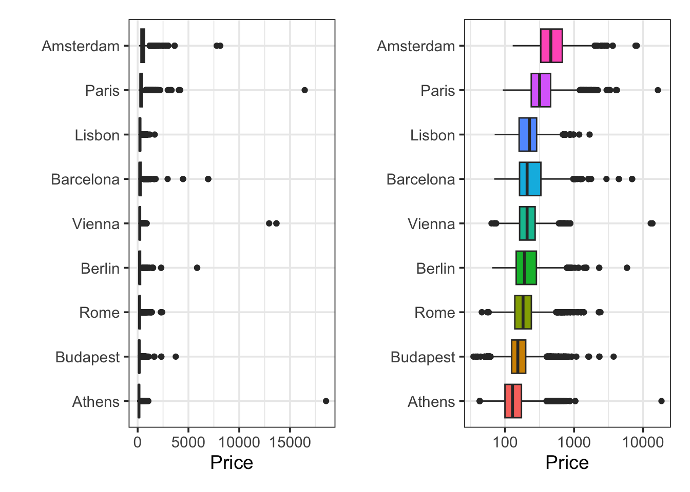
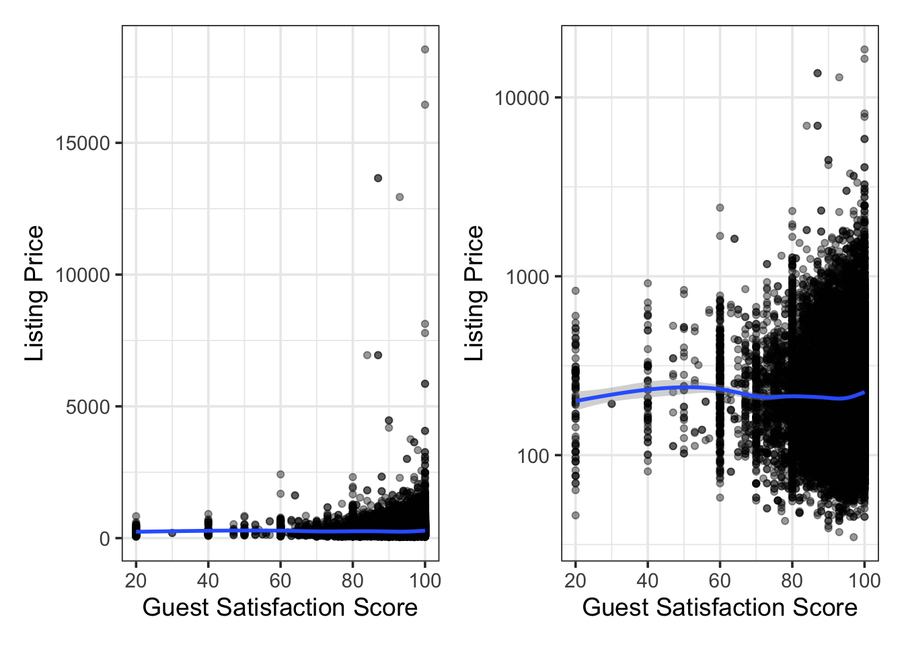
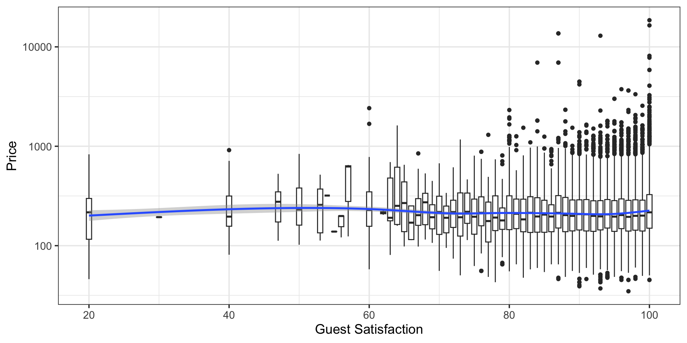

AirBnB is a company that facilitates the pairing of vacation and long-term renters with property owners across the world. This project seeks to construct a predictive model for the pricing of AirBnB rentals across Europe. This benefits AirBnB as well as its property owners because the model can help with price setting, ensuring that owners are not setting rental prices too low. Additionally, the model could benefit renters as well by helping them to identify properties that are reasonably priced.
Executive Summary
Important
This is the last section to be written. You can think of it as a very short “bottom-line up-front” for decision makers. The section should be between 1/2 page and 3/4 of a page and it should (i) remind the reader what the question(s) was/were, (ii) identify the recommended answers/solutions, and (iii) clearly outline your level of certainty/confidence in those recommendations, highlighting any risks or additional assumptions you needed to make while conducting the analysis.
This section should give a decision-maker everything they need to know in order to make a decision or advocate a position relative to the question(s) outlined in your Statement of Purpose.
Introduction
Note
This section is an expanded version of your Statement of Purpose (SOP). It provides additional context and background for the problem(s) outlined in the SOP. The introduction should give members of your target audience all the background and foundational information they need in order to understand the importance of the work to be done in your analytics report.
Exploratory Data Analysis
Note
This section should “tell the story” of how your response variable is distributed as well as which of your predictor variables might be associated with that response. This is your opportunity (and your readers’ opportunity) to learn about your data – the work you do in this EDA section will inform, influence, and justify your modeling choices later on. Try to organize this section as a cohesive narrative that begins with single-variable investigations and progressively investigates the potential associations between two or more variables.
Be sure that the investigations you engage in all tie back to your objective. That is, while there are definitely reasons to consider associations between your explanatory variables, the majority of the associations you investigate here should involve your response/outcome variable in some capacity.
In this section, we set out to understand the distribution of the price variable as well as to identify available features that may be associated with the listing price for an AirBnB Europe property. Throughout this section, we’ll be working with a collection of 35456 training listings (observations). Before we begin our analysis, a snippet showing our first six rows of available training properties appears below.
Code
train %>%head() %>%kable() %>%kable_styling()
city
price
day
room_type
shared_room
private_room
person_capacity
superhost
multiple_rooms
business
cleanliness_rating
guest_satisfaction
bedrooms
city_center_km
metro_distance_km
attraction_index
normalised_attraction_index
restraunt_index
normalised_restraunt_index
Berlin
353.60381
Weekend
Entire home/apt
FALSE
FALSE
5
TRUE
0
0
10
98
1
4.7613998
0.2275156
114.2493
17.413948
139.4354
29.50029
Rome
423.16415
Weekday
Entire home/apt
FALSE
FALSE
6
FALSE
0
1
10
98
2
2.4975278
0.9290282
738.6356
16.368311
1643.4348
35.78220
Lisbon
246.24765
Weekday
Entire home/apt
FALSE
FALSE
4
FALSE
0
1
9
89
2
0.9743672
0.4455236
325.0232
10.730409
678.8510
30.36075
Lisbon
176.36023
Weekday
Private room
FALSE
TRUE
2
FALSE
0
1
10
96
0
2.4933377
0.3619793
108.1352
3.570008
321.8487
14.39427
Rome
97.02382
Weekend
Private room
FALSE
TRUE
2
FALSE
1
0
10
95
1
5.4952277
1.3955865
232.5740
5.152779
563.9774
12.28770
Budapest
231.94059
Weekday
Entire home/apt
FALSE
FALSE
5
FALSE
1
0
10
94
2
1.6776501
0.2308218
141.8491
8.459128
320.0273
24.23345
Distribution of Price
We first need to understand the distribution of the listing price variable. In the output below, the table on the left shows some summary statistics of the price variable and the plots on the right shows its distribution.
We can see from the table and from the plots that the distribution of price is quite strongly right-skewed. There is a property here listed at 18,545.45 – perhaps units here are an issue and listings are priced in local currency. We’ll explore whether this is the case and we need a transformation later. For now, the lower-right plot shows that the distribution of price is approximately log-normal (that is, the distribution of the logarithm of price is approximately normal). The vast majority of properties are priced between 100 and 1,000 – which seems quite reasonable. The average listing (considering both mean and median) looks to be priced within the 200 - 300 range.
Now that we understand a bit about the distribution of the price variable, let’s try to identify other variables that may be associated with the listing price for a property.
Price and City
It seems reasonable to assume that the average listing price may vary by city. In fact, given the distribution of prices, we’ve mentioned that the currency unit may vary from one city to the next. We’ll start by looking at how many properties there are in each city and we’ll look at whether there is a potential association between city and listing price.
We can see that Rome has the greatest number of property listings, which Amsterdam has the fewest. No city has an extremely small number of listings though. Now let’s consider the average listing price by city.
Code
p1 <- train %>%mutate(city =fct_reorder(city, price)) %>%ggplot() +geom_boxplot(aes(x = price, y = city, fill = city),show.legend =FALSE) +labs(x ="Price", y ="")p2 <- train %>%mutate(city =fct_reorder(city, price)) %>%ggplot() +geom_boxplot(aes(x = price, y = city, fill = city),show.legend =FALSE) +scale_x_log10() +labs(x ="Price", y ="")p1 + p2

The plot on the left isn’t very legible because of the presence of properties whose prices are extreme outliers. The plot on the right shows the same information, but with price on a logarithmic scale. We can see here that Amsterdam is the most expensive location on average, while Athens is the cheapest. From here, we can see that city is associated with the price variable.
Guest Satisfaction and Price
Similar to what we did with city, it is reasonable to wonder whether guest_satisfaction and price are associated with one another. We’ll begin with an analysis of the distribution of the guest_satisfaction variable and then we’ll consider whether there is visual evidence to suggest an association between the two variables.
We can see from the table and the plot above that guest_satisfaction is generally quite high. Most of the observed satisfaction scores fall between 75 and 100. Although the variability of this feature is not high, let’s construct a scatterplot to determine whether there may be an association between guest_satisfaction and price.
`geom_smooth()` using method = 'gam' and formula = 'y ~ s(x, bs = "cs")'
`geom_smooth()` using method = 'gam' and formula = 'y ~ s(x, bs = "cs")'

These plots are somewhat difficult to read. There is no obvious association between the guest satisfaction score and the price variable from either of these. The only difference between the plot on the left and the plot on the right is that the plot on the right shows the listing price on a logarithmic scale.
Because of the collections of vertically aligned points at guest_satisfaction scores like 20, 40, 60, etc. we might be able to build a collection of side-by-side boxplots here – we’ll see if doing so provides any additional insights below.
`geom_smooth()` using method = 'gam' and formula = 'y ~ s(x, bs = "cs")'

Even from this plot, there doesn’t see to be an obvious association between guest_satisfaction and listing price. In fact, the trend lines we added to each of the plots above are nearly flat. We won’t exclude this predictor from our modeling process altogether, but we don’t have great hope that guest_satisfaction is a strong predictor of price.
Important
This sample EDA has been quite limited. It was designed to show you how you might approach EDA on the response variable, EDA to explore for an association between the response and a categorical predictor, and EDA to explore for an association between the response and a numeric variable. If this were a full analysis rather than a sample, we would continue to explore more of the available predictors. For EDA with numeric predictors, notice that the use of the geom_smooth() layer can help you identify evidence for curvilinear associations.
Model Construction
Important
I’ve provided two versions of the Model Construction section below. The first uses the traditional approach of looking at p-values and metrics like adjusted-R-squared to assess model quality and significance of model terms. Use an approach like this one if your primary goal is to build a model so that you can interpret associations between the predictors and your response variable (statistical learning). The second version leverages cross-validation and simply uses a model accuracy metric (here RMSE) to guide model selection. Use this approach if the primary goal associated with the problem(s) you outlined in your SOP involve the construction of a model which will make accurate predictions but where interpretations of associations between predictors and response are of lesser importance (machine learning).
You do not necessarily need to choose just one or the other approach. Perhaps the problems/challenges you’ve set out to solve would benefit from both descriptive and predictive models. In this case, just make clear to the reader when you are switching between objectives.
Model Construction without Cross Validation (Statistical Learning / Interpretation Focused)
Note
You’ll notice two separate “Model Construction” sections in this sample report. In general, you will only choose to include one. This version of the Model Construction section involves modeling choices which are focused on \(p\)-values and statistical significance of terms. This means that we are admitting that our primary concern is to construct models that can be interpreted, helping us understand relationships between explanatory variables (predictors) and our response. I refer to this as statistical learning, as opposed to machine learning where our goal is constructing models with high predictive accuracy.
You’ll use this type of Model Construction section when you are in a statistical learning context.
In this section, we’ll propose, justify, fit, and assess several models to predict rental price for our AirBnB Europe properties. We’ll begin with a simple baseline model, ensuring that we can fit a model, make predictions, and get a performance benchmark. Once we have this benchmark, we can compare our future model performance to it.
Simple Linear Regression
We’ll start first with a simple linear regression model. We’ll use guest_satisfaction to predict rental price for this model. From the exploratory data analysis, we saw that guest_satisfaction was not strongly associated with rental price. We don’t have any expectation that this model will be “good”.
On Predictor Selection
Generally, you would choose to use the variable you identified in your exploratory data analysis which had the strongest association with the response for this model. I didn’t conduct a full EDA here, so I just chose the numerical variable that I used in my limited EDA.
The model form we are proposing here is \(\mathbb{E}\left[\texttt{price}\right] = \beta_0 + \beta_1\cdot\left(\texttt{guest satisfaction}\right)\). We construct the model below.
We’ll take a look at the global (overall) model metrics below.
Code
slr_fit %>%glance() %>%kable() %>%kable_styling()
r.squared
adj.r.squared
sigma
statistic
p.value
df
logLik
AIC
BIC
deviance
df.residual
nobs
0.0002264
0.0001982
285.4557
8.026981
0.0046112
1
-250780.2
501566.4
501591.8
2888967566
35454
35456
We see that the \(p\)-value for the global test for model utility is below the 0.05 level of significance. This indicates that our model contains at least one useful predictor of rental price. As a reminder, for simple linear regression, there is only a single predictor and so the global test for model utility and the term-based test are the same. Having such a low adjusted R-squared value and a high training root mean squared error (sigma) indicate that this model has poor explanatory and predictive value.
We can see the term-based metrics in the table output below. From that output, we can see that our estimated model is \(\mathbb{E}\left[\texttt{price}\right] = 210.75 + 0.05\cdot\left(\texttt{guest satisfaction}\right)\).
We’ll now compute our test RMSE. This gives us an unbiased estimate of future model performance. It also provides our first benchmark to compare future models against.
We see that the test RMSE for this first model is about $254.57. This is somewhat better than our training RMSE, indicated that this particular model is likely underfitting.
Multiple Linear Regression
Through this subsection, we’ll build slightly more complex linear regressors. We’ll build a model here that includes city, day, room_type, business, bedrooms, city_center_km, metro_distance_km, normalised_attraction_index, and normalised_restraunt_index. The model form we are proposing is:
mlr_spec <-linear_reg() %>%set_engine("lm")mlr_rec <-recipe(price ~ city + day + room_type + business + bedrooms + city_center_km + metro_distance_km + normalised_attraction_index + normalised_restraunt_index, data = train)mlr_wf <-workflow() %>%add_model(mlr_spec) %>%add_recipe(mlr_rec)mlr_fit <- mlr_wf %>%fit(train)
We’ll analyze the global model performance metrics and compare them to our previous best model (here, our simple linear regression model).
Code
mlr_fit %>%glance() %>%kable() %>%kable_styling()
r.squared
adj.r.squared
sigma
statistic
p.value
df
logLik
AIC
BIC
deviance
df.residual
nobs
0.2413982
0.2410343
248.7098
663.3466
0
17
-245886.3
491810.7
491971.7
2192072080
35438
35456
We see a large improvement in the adjusted R-squared value. The terms in this model explain almost 25% of the variation in price from one property to the next. Additionally, our training RMSE has decreased by almost $40. This RMSE value is still quite high, though.
It looks like neither of city_center_km and metro_distance_km are statistically significant predictors. We’ll re-fit our model without the metro_distance_km variable since it corresponds to the highest \(p\)-value and then reassess.
Code
mlr_rec <-recipe(price ~ city + day + room_type + business + bedrooms + city_center_km + normalised_attraction_index + normalised_restraunt_index, data = train)mlr_wf <-workflow() %>%add_model(mlr_spec) %>%add_recipe(mlr_rec)mlr_fit <- mlr_wf %>%fit(train)mlr_fit %>%extract_fit_engine() %>%tidy() %>%kable() %>%kable_styling()
term
estimate
std.error
statistic
p.value
(Intercept)
403.4051856
8.8686676
45.4865604
0.0000000
cityAthens
-415.7097009
7.6775540
-54.1461126
0.0000000
cityBarcelona
-242.4110085
8.0376749
-30.1593447
0.0000000
cityBerlin
-302.8963305
8.4760460
-35.7355695
0.0000000
cityBudapest
-423.3383952
7.5208344
-56.2887534
0.0000000
cityLisbon
-331.8389456
7.3854450
-44.9314763
0.0000000
cityParis
-210.2624652
7.0982634
-29.6216771
0.0000000
cityRome
-359.2950303
6.6303705
-54.1892837
0.0000000
cityVienna
-301.1379732
7.9219533
-38.0130962
0.0000000
dayWeekend
7.1711145
2.6566560
2.6993011
0.0069518
room_typePrivate room
-105.4360065
3.2027393
-32.9205711
0.0000000
room_typeShared room
-185.3395577
15.4041818
-12.0317690
0.0000000
business
35.9667255
2.9328273
12.2634993
0.0000000
bedrooms
95.1967207
2.1523217
44.2297826
0.0000000
city_center_km
0.2657007
0.9272935
0.2865335
0.7744712
normalised_attraction_index
4.4736281
0.2680057
16.6922878
0.0000000
normalised_restraunt_index
0.8573389
0.1395660
6.1428932
0.0000000
The city_center_km predictor is still not statistically significant, so we’ll drop it from the model as well.
Code
mlr_rec <-recipe(price ~ city + day + room_type + business + bedrooms + normalised_attraction_index + normalised_restraunt_index, data = train)mlr_wf <-workflow() %>%add_model(mlr_spec) %>%add_recipe(mlr_rec)mlr_fit <- mlr_wf %>%fit(train)mlr_fit %>%extract_fit_engine() %>%tidy() %>%kable() %>%kable_styling()
term
estimate
std.error
statistic
p.value
(Intercept)
404.7524623
7.5195164
53.826927
0.0000000
cityAthens
-416.3352959
7.3604713
-56.563674
0.0000000
cityBarcelona
-242.6401286
7.9976970
-30.338750
0.0000000
cityBerlin
-302.1214000
8.0328920
-37.610539
0.0000000
cityBudapest
-423.4802657
7.5044214
-56.430768
0.0000000
cityLisbon
-332.1252319
7.3174541
-45.388085
0.0000000
cityParis
-209.9092520
6.9903146
-30.028584
0.0000000
cityRome
-359.3057235
6.6301797
-54.192457
0.0000000
cityVienna
-301.4451065
7.8489995
-38.405545
0.0000000
dayWeekend
7.1449447
2.6550512
2.691076
0.0071255
room_typePrivate room
-105.4446046
3.2025572
-32.925127
0.0000000
room_typeShared room
-185.4134917
15.4018211
-12.038414
0.0000000
business
35.9346367
2.9306504
12.261659
0.0000000
bedrooms
95.2086709
2.1518897
44.244215
0.0000000
normalised_attraction_index
4.4575656
0.2620739
17.008809
0.0000000
normalised_restraunt_index
0.8432218
0.1305788
6.457570
0.0000000
All of the remaining predictors are statistically significant. We’ll now revisit our global performance metrics to see how much they’ve changed.
Code
mlr_fit %>%glance() %>%kable() %>%kable_styling()
r.squared
adj.r.squared
sigma
statistic
p.value
df
logLik
AIC
BIC
deviance
df.residual
nobs
0.2413959
0.2410749
248.7031
751.8258
0
15
-245886.4
491806.8
491950.9
2192078714
35440
35456
We observe almost no change in the metrics from the original, full model. Let’s take a look at the performance metrics for this new model on our test data.
Again, we have a scenario in which our performance metrics on our test data are better than the metrics on our training data. This indicates that our new model is likely still underfitting. With this new model, we expect predictions to be accurate to within about \(\pm\) $413.
On Benchmarking
Since this model outperforms our original model, it becomes our new benchmark for model performance. That is, we are looking for new models which have a test RMSE below $206.43.
Model Construction with Cross Validation (Machine Learning / Predictive Performance Focused)
Note
In this version of the Model Construction section, we are approaching models with cross-validation performance (cross-validation RMSE) as our sole guide. This means we are admitting that our primary concern is to construct models that have high predictive accuracy. I refer to this as machine learning, as opposed to statistical learning where we want to build models for the sake of interpretation.
You’ll use this type of Model Construction section when you are in a machine learning context.
In this section, we’ll propose, justify, fit, and assess several models to predict rental price for our AirBnB Europe properties. We’ll begin with a simple baseline model, using cross-validation to obtain a stable performance estimate for that model. From there, we’ll construct more complex models, using cross-validation to assess each of those. This process provides robust performance estimates that we can use to compare our models against one another, identifying the model form that produces the best predictive performance (ie. the lowest cross-validation RMSE).
Simple Linear Regression
We’ll start first with a simple linear regression model. We’ll use guest_satisfaction to predict rental price for this model. From the exploratory data analysis, we saw that guest_satisfaction was not strongly associated with rental price. We don’t have any expectation that this model will be “good”.
On Predictor Selection
Generally, you would choose to use the variable you identified in your exploratory data analysis which had the strongest association with the response for this model. I didn’t conduct a full EDA here, so I just chose the numerical variable that I used in my limited EDA.
The model form we are proposing here is \(\mathbb{E}\left[\texttt{price}\right] = \beta_0 + \beta_1\cdot\left(\texttt{guest satisfaction}\right)\). We assess the model via cross-validation below.
We see that the cross-validation RMSE for this first model is about $272.26. We can construct a confidence interval for the future predictive accuracy of this model form (\(\mathbb{E}\left[\text{price}\right] = \beta_0 + \beta_1\cdot\left(\text{guest satisfaction}\right)\)) is between \(\$272.26 \pm 2\cdot\$28.61\) (or $ 215.04 and $ 329.48).
Multiple Linear Regression
Through this subsection, we’ll assess slightly more complex linear regressors. We’ll start with a model here that includes city, day, room_type, business, bedrooms, city_center_km, metro_distance_km, normalised_attraction_index, and normalised_restraunt_index. The model form we are proposing is:
The future predictive performance estimate from cross-validation this time is $228.88, with a corresponding confidence interval of \(\$228.88 \pm 2\cdot\$32.53\) (or between about $ 163.82 and $ 293.94). The ~95% confidence intervals for the RMSE for these models overlaps, but the point estimate represents an improvement over our previous model.
On p-values and Term Significance
Notice that, with cross-validation we aren’t looking at individual model terms and identifying whether terms are statistically significant or not. With cross-validation, we are crossing the rubicon from “statistical learning” (where we care mostly about interpreting models) to “machine learning” (where we care mostly about predictive accuracy). We’ll have alternative methods for identifying which terms should be kept in a model though.
Models with Higher-Order Terms
In this section, we’ll run cross-validation to assess the performance of a model that includes curvilinear terms (cubic / third degree) associated with guest_satisfaction. Further, we’ll account for rental price differences between cities. We’ll allow interactions between city and our curvilinear terms, acknowledging that the curved relationship between guest_satisfaction and rental price may be different from one city to the next.
Letting \(x_1\) represent guest_satisfaction, the form of the model we are constructing is of the form
We can see that this particular model is overfit. The cross-validation error has increased from our previous model. The multiple linear regression model including city, day, room_type, business, bedrooms, city_center_km, metro_distance_km, normalised_attraction_index, and normalised_restraunt_index as independent predictors with no higher-order terms and no interactions remains our best model so far.
Let’s try tuning the degree on the guest_satisfaction predictor from our most recently cross-validated model.
At this point, we would continue exploring additional models. The model forms that we examine are informed by our exploratory data analysis and our intuition about which variables are associated with the response (and how)…
Model Interpretation and Inference
Note
This section provides interpretations of our models. In a statistical learning application, where we seek to build a descriptive model which can be interpreted, this section is where our primary question(s) will be answered. In a machine learning context, this section may or may not be included, depending on whether the goals are purely predictive or if having some understanding of how/why the model arrives at predictions is of interest (it usually is, even if just to give us more confidence that the model is trustworthy).
We don’t cover exhaustive interpretations here, but we’ll highlight the most interesting and pertinent findings.
Simple Linear Regression
As a reminder, we built a simple linear regression model that used guest_satisfaction to predict rental price. That estimated model appears below.
The model indicates that, as guest satisfaction increases, we expect the rental price to increase as well. For every 10-point increase in guest satisfaction, we expect an additional approximately $5.30 in the list price.
Multiple Linear Regressor
We built a multiple linear regressor that included several of our available predictors. Initially, that model included city, day, room_type, business, bedrooms, city_center_km, metro_distance_km, normalised_attraction_index, and normalised_restraunt_index. However, city_center_km and metro_distance_km were both reduced out since they were insignificant predictors. The resulting model is described in the table below.
Controlling for day, roomType, business, bedrooms, attraction index, and restaurant index, Amsterdam (the base-level for city) is the most expensive city, on average.
Controlling for day, roomType, business, bedrooms, attraction index, and restaurant index, Budapest is the least expensive city on average, since it has the largest negative price adjustment relative to Amsterdam.
Controlling for city, roomType, business, bedrooms, attraction index, and restaurant index, weekend rentals are more expensive than weekday rentals by about $7 on average.
Controlling for city, day, roomType, business, attraction index, and restaurant index, each additional bedroom results in an expected increase in rental price by about $95.21
There are more interpretations that can be made, but these seem to be the most interesting.
Conclusion
Note
This section provides a short recap of the entire analysis from start to finish. It is likely that you won’t have any new code here. You’ll remind the reader of the initial problem(s) and their importance, what you discovered during EDA, your journey through the modeling process, and your final results. What is/are your best model(s)? How can they be used to answer your question(s) of interest? For a statistical learning application, what insights does your model(s) provide you about associations between available predictors and the response? For machine learning applications, how accurate a model were you able to construct? What are its strengths and weaknesses?
How confident are you in the results of your analysis? What work is still left to be done? Are there any questions (new or old) that are left unresolved – what is the future work to be done?
References
Your typical references section goes here, citing any sources you utilized.